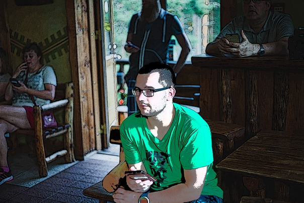

Родился в Эстонии в не большом городе Кейла. Там же получил основное образование, в Кейла Обшей Гимназии. Не за долго до окончания основной школы переехал жить в город Таллинн. В Таллинне после окончания основной школы, поступил в Таллинский Политехникум по специальности "Компьютеры и Компьютерные сети". После окончания Политехникума был перерыв в получении образования. Затем была поставленна цель получить высшее образование в университете предпринимательства Майнор по специальности "Веб-дизайн и Веб-технологии". На данный момент идет заключительная фаза обучения в университете Майнор.